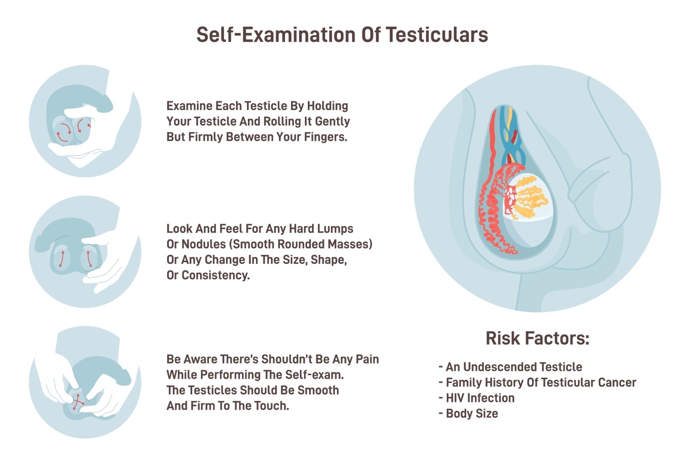
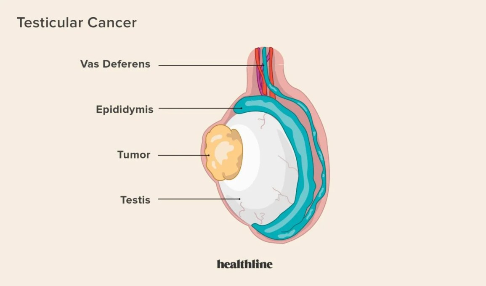
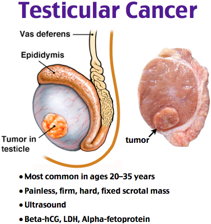

Testicular Cancer
Testicular Cancer
Testicular cancer develops in the testicles (testes), which are located inside the scrotum, the loose bag of skin underneath the penis. The testicles produce male reproductive hormones and sperm for reproduction.
While relatively rare compared to other types of cancer, testicular cancer is the most common cancer in males between the ages of 15 and 35.
Key Facts
Highly Treatable: Testicular cancer is highly treatable, even when cancer has spread beyond the testicle. Depending on the type and stage of testicular cancer, patients may receive one of several treatments, or a combination.
Early Detection is Key: Regular self-exams can help identify growth early, when the chance for successful treatment is highest.
Symptoms
Signs and symptoms of testicular cancer include:
A lump or enlargement in either testicle.
A feeling of heaviness in the scrotum.
A dull ache in the abdomen or groin.
A sudden collection of fluid in the scrotum.
Pain or discomfort in a testicle or the scrotum.
Enlargement or tenderness of the breasts.
Back pain.
Note: Cancer usually affects only one testicle.

Shutterstock
Explore
Risk Factors
Factors that may increase the risk of testicular cancer include:
Undescended testicle (cryptorchidism): Men who have a testicle that never descended are at greater risk than men whose testicles descended normally.
Abnormal testicle development: Conditions that cause testicles to develop abnormally, such as Klinefelter syndrome, may increase risk.
Family history: If family members have had testicular cancer, there may be an increased risk.
Age: It most often affects teens and younger men, particularly those between ages 15 and 35, though it can occur at any age.
Race: Testicular cancer is more common in white men than in black men.
Diagnosis
Ultrasound: Uses sound waves to create an image of the scrotum and testicles to determine the nature of any lumps.
Blood tests: Checks for "tumor markers"—substances found in higher than normal amounts when cancer is present.
Surgery (radical inguinal orchiectomy): If a suspicious lump is detected, the entire testicle may be removed to determine if it is cancerous.
Treatment
Treatment options depend on the type and stage of cancer, as well as overall health and preferences.
Surgery: To remove the testicle (orchiectomy) and sometimes nearby lymph nodes.
Radiation therapy: Uses high-powered energy beams, such as X-rays, to kill cancer cells.
Chemotherapy: Uses drugs to kill cancer cells.
Prevention
There is no proven way to prevent testicular cancer. However, doctors recommend regular self-examinations to identify changes early.


Testicular cancer is a cancer seen in young men. Early detection makes complete cure a possibility for this disease. Experts such as Dr Gopal Sharma routinely handle such cases in their Uro Oncology Practice. For multimodality and expert treatment of testicular cancer, you can contact Dr Gopal Sharma.